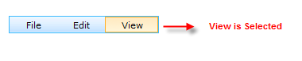
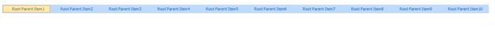

Navigation
Menu supports navigating to the given link on liking an item. This feature can be set by specifying the target link to the NavigateUrl property of an item, in the Designer dialog, which will be displayed on the click of that item.
Figure 228: Menu with NavigateUrl (Target set to blank)
The Target property allows the user to set whether to open the links in the same window, or a new window, or in a different frame by setting the required option.
|
Property |
Description |
|
NavigateUrl |
URL to navigate to, when NavigateUrl method is called for an item. |
|
Target |
Specifies where the target of the url to be displayed. Default value is '_self'. The options included are as follows:
· self · blank · Frame name |
Disabled state
The items can be set to the disabled state that denies any access to that item. This can be done by setting the Disabled property for the required items.
|
Property |
Description |
|
Disabled |
Gets/sets the boolean value, whether a menu item is functional. When set to true, it does not respond to user actions. Default value if false. |
StatusBar and Text order Appearance
The menu items can displayed in the reverse order using the RightToLeft property.
Any text can be displayed on the browser window's status bar during callback by setting StatusBarText to the text to be displayed.
|
Property |
Description |
|
RightToLeft |
Gets/sets the boolean value, whether to change the menu reading order from right to left. Default value is No. |
|
StatusBarText |
Specifies the text to be displayed on the status bar of the browser during callback. |
Selection Behavior
Selected State
The item can be set to the Selected state, which applies to the selected css class of the menu item. This can be done by setting the Selected property for the required item or by clicking the menu item and the item will be automatically selected.
Properties
Table 2: Property Table
|
Property |
Description |
Type |
Data Type |
|
Selected |
Specifies if the item is Selected or not. |
Server side |
Boolean |

Figure 229: Selected item
Selectable
The item can be set to Selectable state, which avoids selecting the menu item and also postback of the page. Client side functionalities will work when we set the Selectable to false but it avoids server side postback when clicking it.
Properties
|
Property |
Description |
Type |
Data Type |
|
Selectable |
Specifies if the item is Selectable or not. |
Server side |
Boolean |
Setting the Selection Settings
The following code snippets show how to set the selected and selectable property.
|
[ASPX] <syncfusion:Menu ID="Menu" runat="server" AutoFormat="Office2007 Luna Blue"> <Items> <syncfusion:MenuItem Text="Root Parent Item1" Selected="true"> </syncfusion:MenuItem> <syncfusion:MenuItem Text="Root Parent Item2" Selectable="false"> </syncfusion:MenuItem> <syncfusion:MenuItem Text="Root Parent Item3"> </syncfusion:MenuItem> <syncfusion:MenuItem Text="Root Parent Item4" Selectable="false"> </syncfusion:MenuItem> <syncfusion:MenuItem Text="Root Parent Item5"> </syncfusion:MenuItem> <syncfusion:MenuItem Text="Root Parent Item6"> </syncfusion:MenuItem> <syncfusion:MenuItem Text="Root Parent Item7"> </syncfusion:MenuItem> <syncfusion:MenuItem Text="Root Parent Item8"> </syncfusion:MenuItem> <syncfusion:MenuItem Text="Root Parent Item9"> </syncfusion:MenuItem> <syncfusion:MenuItem Text="Root Parent Item10"> </syncfusion:MenuItem> <syncfusion:MenuItem Text="Root Parent Item11"> </syncfusion:MenuItem> <syncfusion:MenuItem Text="Root Parent Item12"> </syncfusion:MenuItem> <syncfusion:MenuItem Text="Root Parent Item13"> </syncfusion:MenuItem> </Items> </syncfusion:Menu> |
|
[C#]
protected void Page_Load(object sender, EventArgs e) { //Changing the Selected property to true. Which applies the Selected css. this.Menu1.Items[0].Selected = true;
//Changing the Selectable property to false which avoids postback. this.Menu1.Items[3].Selectable = false; this.Menu1.Items[2].Items[0].Selectable = false; } |
|
[VB]
Protected Sub Page_Load(sender As Object, e As EventArgs) 'Changing the Selected property to true. Which applies the Selected css. Me.Menu1.Items(0).Selected = True
'Changing the Selectable property to false which avoids postback. Me.Menu1.Items(3).Selectable = False Me.Menu1.Items(2).Items(0).Selectable = False End Sub |

Figure 230: Selection behaviour
Use Case Scenarios
The “Selected” property of the Menu item helps the user to highlight a particular menu item for the end-user when it is selected and the “Selectable” state avoids reselecting the menu item and also postback of the page (explained in the above sections Selected State and Selectable).
Sample Link
To access a Selection behavior sample:
1. Open the Syncfusion Dashboard.
74. Click User Interface.
75. Click the ASP.NET drop-down list, and select Locally Installed Samples.
76. Navigate to MenuPackage- ->Menu-Basic Features -- > Core Features samples.